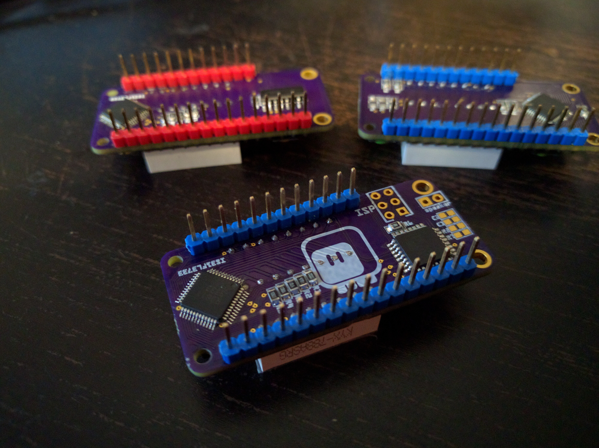

Version 1.5¶
Published on 2017-06-18 in PewPew FeatherWing.
The boards for version 1.5 arrived yesterday, and today I had some time to assemble one. It didn’t work initially, but after touching each solder joint with the soldering iron again, it started to work. Go figure.
Programming of the ATmega8 went smoothly, and it does appear as an I²C device together with the display controller, so everything seems fine. I will test the key scanning and the display library later. The sound code requires some more work before it’s usable – hopefully I will be able to beat it into shape soon.
I already have a version 1.6 PCB designed – the only difference is that it has pads for an SMD speaker, and that the speaker is driven from two GPIO pins, not one and ground – giving me one more bit of resolution and louder volume. I’m not ordering that yet, though, because I’m sure I will have some ideas for improvements while working with the version 1.5.\